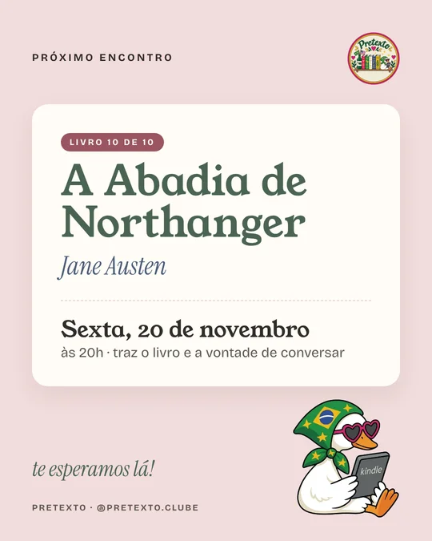

Posts para baixar
Todas as artes do Pretexto em PNG, no formato 4:5 (1080 × 1350). Toque numa imagem para ver em tamanho real, ou baixe cada tela. Cada livro tem um carrossel de 3 telas, na ordem de postar.
Todas as artes do Pretexto em PNG, no formato 4:5 (1080 × 1350). Toque numa imagem para ver em tamanho real, ou baixe cada tela. Cada livro tem um carrossel de 3 telas, na ordem de postar.